«Back
Graphic Design
My Logo
This is my logo.

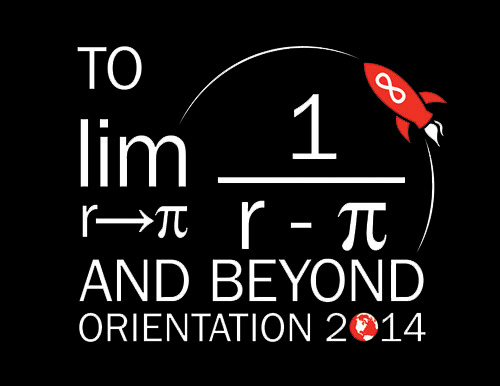
Student Orientation
I worked in the Office of Student Experience and had the opportunity to design all material for orientation for the incoming class of 2018. This included design brochures, posters, presentations, social media outbursts, and the t-shirts (below). The theme was infinity.
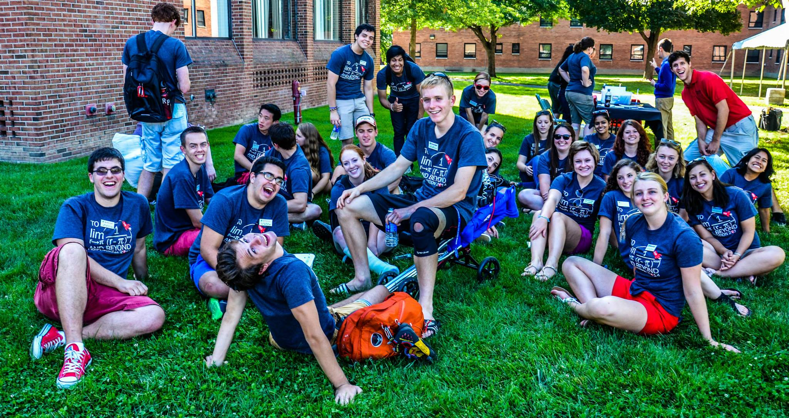
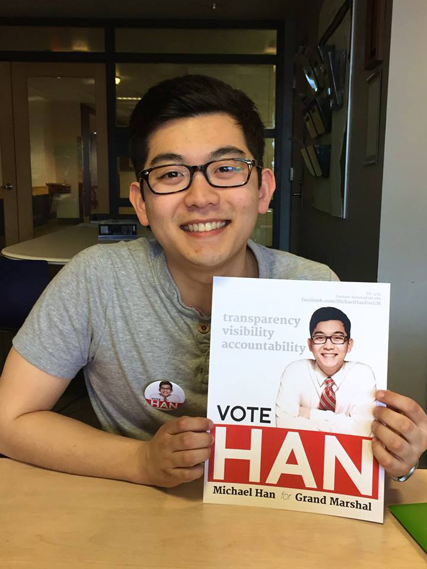
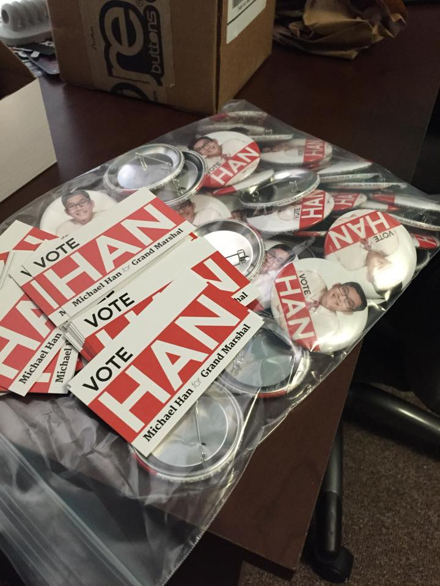
Elections 2015
I designed the election's posters for a few classmates starting with class elections in 2013. Here I feature Michael Han's campaign for Grand Marshall. I created multiple poster designs, buttons, social media images, business cards, and other campaign material's for the party.
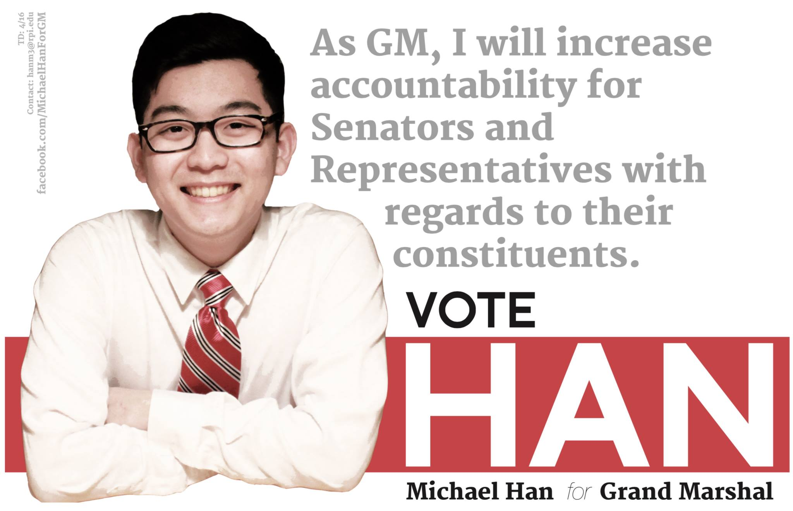
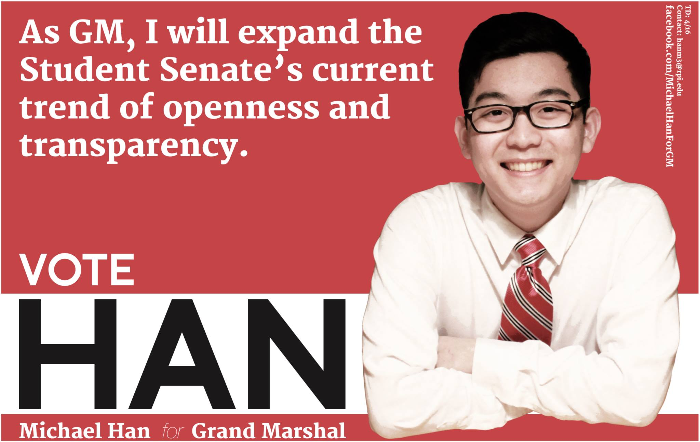
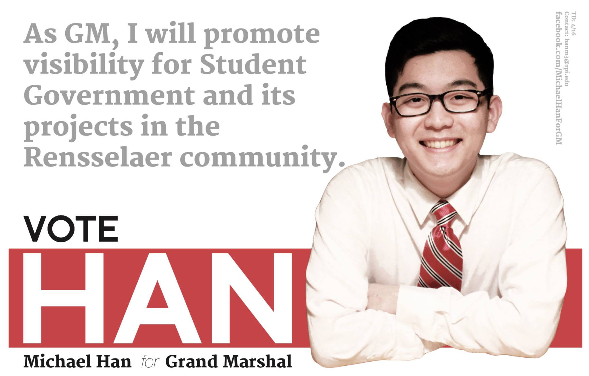
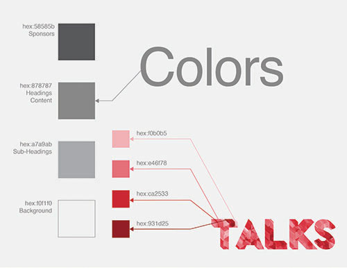

TALKS
TALKS is a by-students-for-students event that works to spark conversation amongst faculty, students, and the community at Rensselaer. I have helped since its inaugural year and have created posters, presentations, and programs, for the bi-annual event.


Knolling
This project was completed in a group as part of the Studio III course. Our goal was to address the issue of being afraid to "ruin" a clean sheet of paper. We wanted to send the message to "just start."
Collaborators: Evan Fouche, Jeff Nassar, and David Rosenberg
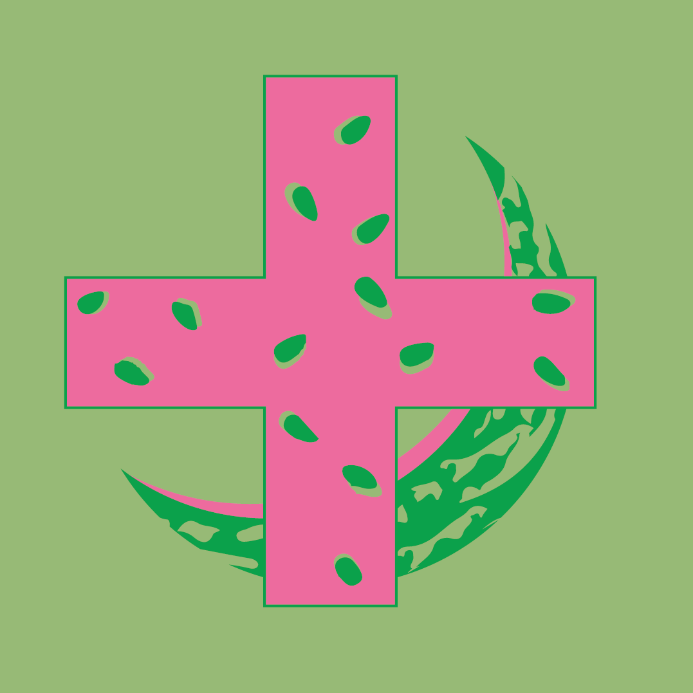
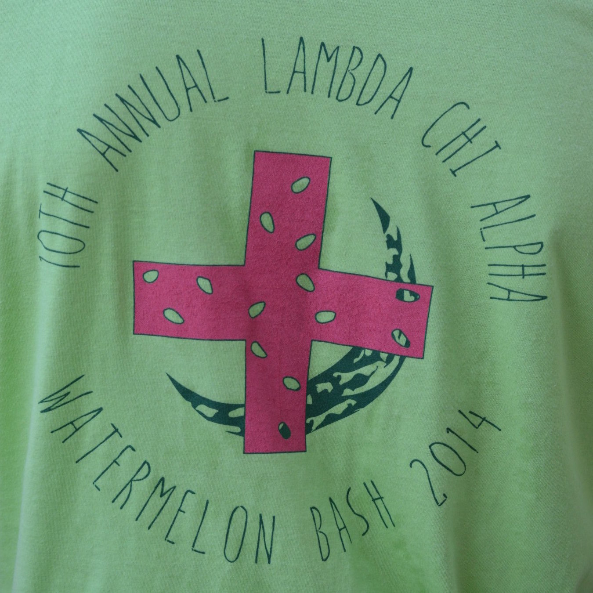
Watermelon Bash
This logo was designed for a fraternity's philanthropy event. Lambda Chi's annual Watermelon Bash raises money for the Troy Unity HOuse by having teams compete in watermelon-themed activities.

200 Days
As a senior on class council, different events are hosted to celebrate the upcoming graduation. This poster was designed for the kick-off event, which took place 200 days before our graduation.
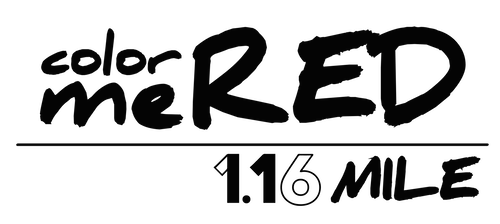
Color Me Red
As part of the Class of 2016 Council, I designed the logo for a a 1.16 mile-long run. White t-shirts with the logo were worn by runners who became covered in red as they ran the set course around campus.
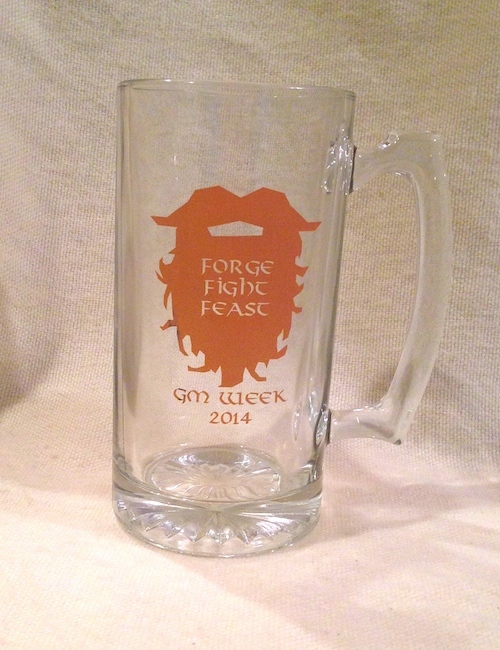
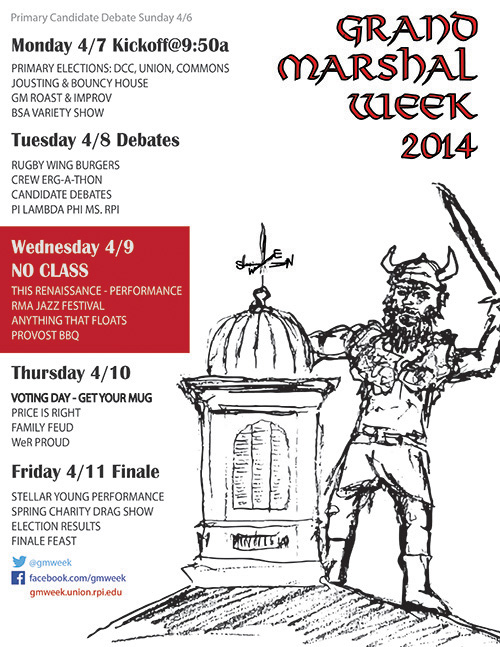
GM Week
I worked on the design commitee for Grand Marshal Week (the election week at Rensselaer). I created posters, calendars, and the annual GM Week Mug which is given to each student when he/she casts their vote on Voting Day.
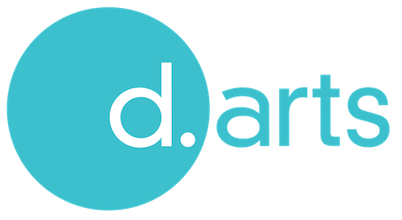
Design+Arts Housing
As part of Studio VI, this logo for Design & Arts Housing was created along with plans for a studio space in one of the dorms. When implemented, this logo ended up on the wall of the studio space.